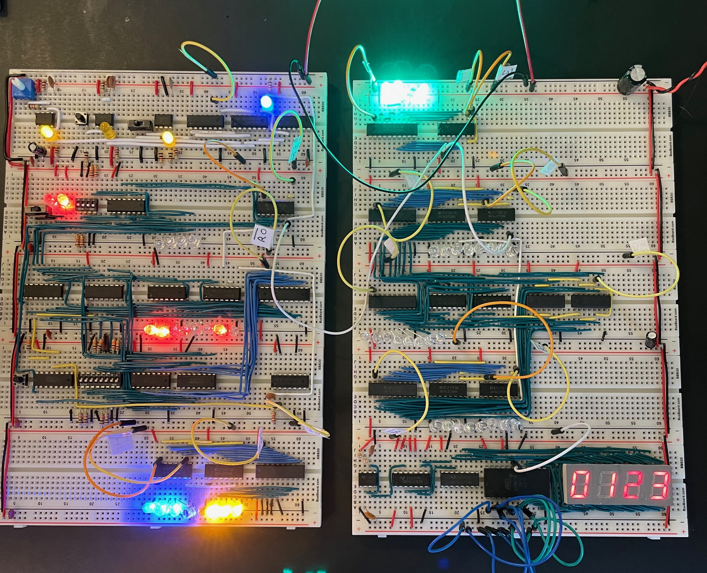

def mean(xs: List[Double]): Double =
if xs.isEmpty then
throw new ArithmeticException("mean of empty list!")
else xs.sum / xs.length
def variance(xs: List[Double]): Double =
val m = mean(xs)
mean(xs.map(x => math.pow(x - m, 2)))Compositional Programming
Part 1: Complexity
Complexity is the root cause of the vast majority of problems with software today. Unreliability, late delivery, lack of security — often even poor performance in large-scale systems can all be seen as deriving ultimately from unmanageable complexity.
Out of the Tar Pit. 2006
— Ben Moseley & Peter Marks
— Ben Moseley & Peter Marks
…we have to keep it crisp, disentangled, and simple if we refuse to be crushed by the complexities of our own making…
The Tide, Not the Waves. 1997
— Edgar Dijkstra
— Edgar Dijkstra
There are two ways of constructing a software design: One way is to make it so simple that there are obviously no deficiencies, and the other way is to make it so complicated that there are no obvious deficiencies. The first method is far more difficult.
The Emperor’s Old Clothes (Turing Award Lecture). 1980
— C.A.R. Hoare
— C.A.R. Hoare
It demands the same skill, devotion, insight, and even inspiration as the discovery of the simple physical laws which underlie the complex phenomena of nature.
The Emperor’s Old Clothes (Turing Award Lecture). 1980
— C.A.R. Hoare
— C.A.R. Hoare
I have made this longer than usual because I have not had time to make it shorter.
Letter 16. 1657
— Blaise Pascal
— Blaise Pascal


Agenda
Techniques from Functional Programming
Error Handling
Data Modeling
Persistent Data Structures
Combinators
Typeclasses
Part 2: Techniques
Error Handling
> mean(List(1.0, 2.0, 3.0, 4.0, 5.0))
val res0: Double = 3.0
> mean(List(1.0, 2.0, 3.0, 4.0, 5.0))
val res1: Double = 2.0Error Handling
def mean(xs: List[Double]): Double =
if xs.isEmpty then
throw new ArithmeticException("mean of empty list!")
else xs.sum / xs.length> mean(List())
java.lang.ArithmeticException: mean of an empty list!
at rs$line$9$.mean(rs$line$9:2)
... 32 elidedmeanis a partial function — only defined for part of its domainWe prefer total functions as they compose better
Error Handling
enum Option[+A]:
case Some(get: A)
case NoneError Handling
enum Option[+A]:
case Some(get: A)
case None
def mean(xs: List[Double]): Option[Double] = (1)
if xs.isEmpty then None
else Some(xs.sum / xs.length)| 1 | mean is now a total function |
Error Handling
def variance(xs: List[Double]): Double =
val m = mean(xs)
mean(xs.map(x => math.pow(x - m, 2)))-- [E134] Type Error: ----------------------------------------------------------
3 | mean(xs.map(x => math.pow(x - m, 2)))
| ^^^
|None of the overloaded alternatives of method - in class Double with types
| (x: Double): Double
| (x: Float): Double
| (x: Long): Double
| (x: Int): Double
| (x: Char): Double
| (x: Short): Double
| (x: Byte): Double
|match arguments ((m : Option[Double]))
1 error foundError Handling
def variance(xs: List[Double]): Option[Double] =
mean(xs) match
case Some(m) =>
mean(xs.map(x => math.pow(x - m, 2)))
case None => NoneError Handling
enum Option[+A]:
case Some(get: A)
case None
def map[B](f: A => B): Option[B] =
this match
case None => None
case Some(a) => Some(f(a))Error Handling
def variance(xs: List[Double]): Option[Double] =
mean(xs).map: m =>
mean(xs.map(x => math.pow(x - m, 2)))-- [E007] Type Mismatch Error: -------------------------------------------------
3 | mean(xs.map(x => math.pow(x - m, 2)))
| ^^^^^^^^^^^^^^^^^^^^^^^^^^^^^^^^^^^^^
| Found: Option[Double]
| Required: Double
|
| longer explanation available when compiling with `-explain`
1 error foundError Handling
enum Option[+A]:
case Some(get: A)
case None
def map[B](f: A => B): Option[B] =
this match
case None => None
case Some(a) => Some(f(a))
def flatMap[B](f: A => Option[B]): Option[B] =
this match
case None => None
case Some(a) => f(a)Error Handling
def variance(xs: List[Double]): Option[Double] =
mean(xs).flatMap: m =>
mean(xs.map(x => math.pow(x - m, 2)))Data Modeling
Data oriented design
Prefer data over state
Data is immutable and forever
Data can be stored, printed, compared
Make illegal states unrepresentable
Data Modeling
trait Host
trait IpAddress extends Host
case class Ipv4Address(b0: Byte, ..., b3: Byte) extends IpAddress
case class Ipv6Address(b0: Byte, ..., b15: Byte) extends IpAddress
case class Hostname(...) extends Host
case class IDN(...) extends Host
Data Modeling
val h1 = IpAddress.fromString("127.0.0.1")
// val h1: Option[IpAddress] = Some(127.0.0.1)
val h2 = IpAddress.fromString("::1")
// val h2: Option[IpAddress] = Some(::1)
val h3 = Host.fromString("localhost")
// val h3: Option[Host] = Some(localhost)
val port = Port.fromInt("8080")
// val port: Option[Port] = Some(8080)Data Modeling
val m = MacAddress.fromString("00:11:22:33:44:55")
// val m: Option[MacAddress] = Some(00:11:22:33:44:55)
val m2 = MacAddress.fromBytes(Array[Byte](0, 17, 34, 51, 68, 85))
// val m2: Option[MacAddress] = Some(00:11:22:33:44:55)
val m3 = MacAddress.fromBytes(0, 17, 34, 51, 68, 85)
// val m3: MacAddress = 00:11:22:33:44:55object MacAddress:
def fromBytes(bytes: Array[Byte]): Option[MacAddress] =
if bytes.length == 6 then Some(new MacAddress(bytes))
else None
def fromBytes(b0: Byte, ..., b5: Byte): MacAddress =
val bytes = new Array[Byte](6)
bytes(0) = b0
...
bytes(5) = b5
new MacAddress(bytes)Data Modeling
abstract class GenSocketAddress
final case class SocketAddress[+A <: Host](host: A, port: Port) extends GenSocketAddress:
override def toString: String =
host match
case _: Ipv6Address => s"[$host]:$port"
case _ => s"$host:$port"
final case class UnixSocketAddress(path: String) extends GenSocketAddress:
override def toString: String = pathcase class ConnectionSettings(
address: SocketAddress[Ipv4Address],
...
)Data Modeling
package fs2.io.net
sealed trait Network[F[_]]:
/** Opens a stream socket and connects it to the supplied address.
*
* TCP is used when the supplied address contains an IP address or hostname. Unix sockets are also
* supported (when the supplied address contains a unix socket address).
*
* @param address address to connect to
* @param options socket options to apply to the socket
*/
def connect(address: GenSocketAddress, options: List[SocketOption] = Nil): Resource[F, Socket[F]]
/** Opens and binds a stream server socket to the supplied address.
*
* TCP is used when the supplied address contains an IP address or hostname. Unix sockets are also
* supported (when the supplied address contains a unix socket address).
*
* @param address address to bind to
* @param options socket options to apply to each accepted socket
*/
def bind(
address: GenSocketAddress = SocketAddress.Wildcard,
options: List[SocketOption] = Nil
): Resource[F, ServerSocket[F]]Persistent data structures
/** Least recently used cache. */
trait CachePersistent data structures
/** Maps keys to value and stores up to a maximum number of entries.
* When inserting a new mapping in to a full cache, the least recently
* accessed/updated mapping is removed.
*/
trait Cache[K, V]Persistent data structures
/** Maps keys to value and stores up to a maximum number of entries.
* When inserting a new mapping in to a full cache, the least recently
* accessed/updated mapping is removed.
*/
trait Cache[K, V]:
def put(k: K, v: V): Cache[K, V]Persistent data structures
/** Maps keys to value and stores up to a maximum number of entries.
* When inserting a new mapping in to a full cache, the least recently
* accessed/updated mapping is removed.
*/
trait Cache[K, V]:
/** Returns a cache with the supplied mapping and the evicted entry. */
def put(k: K, v: V): (Cache[K, V], Option[(K, V)])Persistent data structures
/** Maps keys to value and stores up to a maximum number of entries.
* When inserting a new mapping in to a full cache, the least recently
* accessed/updated mapping is removed.
*/
trait Cache[K, V]:
/** Returns a cache with the supplied mapping and the evicted entry. */
def put(k: K, v: V): (Cache[K, V], Option[(K, V)])
/** Gets the value for the specified key. */
def get(k: K): Option[V]Persistent data structures
/** Maps keys to value and stores up to a maximum number of entries.
* When inserting a new mapping in to a full cache, the least recently
* accessed/updated mapping is removed.
*/
trait Cache[K, V]:
/** Returns a cache with the supplied mapping and the evicted entry. */
def put(k: K, v: V): (Cache[K, V], Option[(K, V)])
/** Gets value for the specified key - returns both the updated cache and value. */
def get(k: K): Option[(Cache[K, V], V)]Persistent data structures
class Cache[K, V] private (
max: Int,
entries: Map[K, V],
usages: SortedBiMap[Long, K],
stamp: Long):
def get(k: K): Option[(Cache[K, V], V)] =
entries.get(k).map: v =>
val newUsages = usages + (stamp -> k)
val newCache = Cache(max, entries, newUsages, stamp + 1)
Some(newCache -> v)Persistent data structures
class Cache[K, V] private (
max: Int,
entries: Map[K, V],
usages: SortedBiMap[Long, K],
stamp: Long):
def put(k: K, v: V): (Cache[K, V], Option[(K, V)]) =
if max <= 0 then
// max is 0 so immediately evict the new entry
(this, Some((k, v)))
else if entries.size >= max && !contains(k) then
// at max size already and we need to add a new key, hence we must evict
// the least recently used entry
val (lruStamp, lruKey) = usages.head
val newEntries = entries - lruKey + (k -> v)
val newUsages = usages - lruStamp + (stamp -> k)
val newCache = Cache(max, newEntries, newUsages, stamp + 1)
(newCache, Some(lruKey -> entries(lruKey)))
else
// not growing past max size at this point, so only need to evict if
// the new entry is replacing an existing entry with different value
val newEntries = entries + (k -> v)
val newUsages = usages + (stamp -> k)
val newCache = Cache(max, newEntries, newUsages, stamp + 1)
val evicted = entries.get(k).filter(_ != v).map(k -> _)
(newCache, evicted)Combinators
Combinators
case class DecodeResult[+A](value: A, remainer: BitVector)
trait Decoder[+A]:
def decode(bv: BitVector): Attempt[DecodeResult]
trait Encoder[-A]:
def encode(a: A): Attempt[BitVector]
trait Codec[A] extends Encoder[A] & Decoder[A]Combinators
case class DecodeResult[+A](value: A, remainer: BitVector):
def map[B](f: A => B): DecodeResult[B] =
DecodeResult(f(value), remainder)Combinators
case class DecodeResult[+A](value: A, remainer: BitVector):
def map[B](f: A => B): DecodeResult[B] =
DecodeResult(f(value), remainder)
trait Decoder[+A]:
self =>
def decode(bv: BitVector): Attempt[DecodeResult]
def map[B](f: A => B): Decoder[B] = new Decoder[B]:
def decode(bv: BitVector): Attempt[DecodeResult] =
self.decode(bv).map(_.map(f))Combinators
trait Encoder[-A]:
self =>
def encode(a: A): Attempt[BitVector]
def map[B](f: A => B): Encoder[B] = new Encoder[B]:
def encode(b: B): Attempt[BitVector] =
??? // Have a value of b: B and f: A => BCombinators
trait Encoder[-A]:
self =>
def encode(a: A): Attempt[BitVector]
def contramap[B](f: B => A): Encoder[B] = new Encoder[B]:
def encode(b: B): Attempt[BitVector] =
self.encode(f(b))Combinators
trait Codec[A] extends Decoder[A] & Encoder[A]:
self =>
def exmap[B](f: A => B, g: B => A): Codec[B] = new Codec[B]:
def decode(bv: BitVector) = self.decode(bv).map(_.map(f))
def encode(b: B) = self.encode(g(b))Combinators
import scodec.codecs.int8
val triple = int8 :: int8 :: int8
// val triple: Codec[(Int, Int, Int)] = 8-bit signed integer :: 8-bit signed integer :: 8-bit signed integer
val enc = triple.encode(1, 2, 3)
// val enc: Attempt[BitVector] = Successful(BitVector(24 bits, 0x010203))
val reversed = enc.require.bytes.reverse.bits
// val reversed: BitVector = BitVector(24 bits, 0x030201)
val dec = triple.decode(reversed)
// val dec: Attempt[DecodeResult[(Int, Int, Int)]] = Successful(DecodeResult((3,2,1),BitVector(empty)))Combinators
object Codec:
extension [A, B <: Tuple](codecA: Codec[A])
def ::(codecB: Codec[B]): Codec[A *: B] =
new Codec[A *: B]:
def encode(ab: A *: B) = encodeBoth(codecA, codecB)(ab.head, ab.tail)
def decode(bv: BitVector) = decodeBoth(codecA, codecB)(bv).map(_.map(_ *: _))
extension [A, B](a: Codec[A])
def ::(b: Codec[B])(using DummyImplicit): Codec[(A, B)] =
new Codec[(A, B)]:
def encode(ab: (A, B)) = encodeBoth(a, b)(ab(0), ab(1))
def decode(bv: BitVector) = decodeBoth(a, b)(bv)Combinators
val x = int8.encode(500)
// val x: Attempt[BitVector] = Failure(500 is greater than maximum value 127 for 8-bit signed integer)
val labeled = ("size" | int8)
// val labeled: Codec[Int] = size(8-bit signed integer)
val y = labeled.encode(500)
// val y: Attempt[BitVector] = Failure(size: 500 is greater than maximum value 127 for 8-bit signed integer)Combinators

Combinators
case class Ipv6Header(
trafficClass: Int,
flowLabel: Int,
payloadLength: Int,
protocol: Int,
hopLimit: Int,
sourceIp: Ipv6Address,
destinationIp: Ipv6Address
)val ipv6: Codec[Ipv6Address] =
bytes(16).xmap(
b => Ipv6Address.fromBytes(b.toArray).get,
a => ByteVector.view(a.toBytes))
given Codec[Ipv6Header] = {
("version" | constant(bin"0110")) ::
("traffic_class"| uint8 ) ::
("flow_label" | uint(20) ) ::
("payload_len" | uint16 ) ::
("next_header" | uint8 ) ::
("hop_limit" | uint8 ) ::
("source_ip" | ipv6 ) ::
("dest_ip" | ipv6 )
}.as[Ipv6Header]Typeclasses
trait Semigroup[A]:
def combine(x: A, y: A): A
trait Monoid[A] extends Semigroup[A]:
def empty: ATypeclasses
given Monoid[Int]:
def combine(x: Int, y: Int) = x + y
def empty = 0
given Monoid[String]:
def combine(x: String, y: String) = x ++ y
def empty = ""given [A] => Monoid[List[A]]:
def combine(x: List[A], y: List[A]) = x ++ y
def empty = NilTypeclasses
> summon[Semigroup[Int]].combine(1, 2)
val res0: Int = 3
> summon[Semigroup[String]].combine("Hello", "World")
val res1: String = "HelloWorld"
> summon[Semigroup[List[Int]]].combine(List(1, 2, 3), List(4, 5, 6))
val res2: List[Int] = List(1, 2, 3, 4, 5, 6)Typeclasses
trait Semigroup[A]:
def combine(x: A, y: A): A
extension (x: A) def |+|(y: A): A = combine(x, y)
trait Monoid[A] extends Semigroup[A]:
def empty: A> 1 |+| 2
val res0: Int = 3
> "Hello" |+| "World"
val res1: String = "HelloWorld"
> List(1, 2, 3) |+| List(4, 5, 6)
val res2: List[Int] = List(1, 2, 3, 4, 5, 6)Typeclasses
given [A: Semigroup] => Monoid[Option[A]]:
def combine(x: Option[A], y: Option[A]) =
(x, y) match
case (None, None) => None
case (Some(xx), None) => Some(xx)
case (None, Some(yy)) => Some(yy)
case (Some(xx), Some(yy)) => Some(xx |+| yy)
def empty = NoneTypeclasses
given [A: Semigroup] => Monoid[Option[A]]:
def combine(x: Option[A], y: Option[A]) =
(x, y) match
case (None, None) => None
case (Some(xx), None) => Some(xx)
case (None, Some(yy)) => Some(yy)
case (Some(xx), Some(yy)) => Some(xx |+| yy)
def empty = NoneTypeclasses
> Some(1) |+| Some(2)
val res0: Option[Int] = Some(3)
> Some(1) |+| None
val res1: Option[Int] = NoneTypeclasses
given [K, V: Semigroup] => Monoid[Map[K, V]]:
def combine(x: Map[K, V], y: Map[K, V]) =
y.foldLeft(x):
case (acc, (k, v)) =>
acc.updatedWith(k)(_ |+| Some(v))
def empty = Map.emptyval a = Map("hello" -> 1, "world" -> 1)
val b = Map("world" -> 2, "scala" -> 1)
val c = a |+| b
// c = Map(("hello", 1), ("world", 3), ("scala", 1))Typeclasses
extension [A](as: IterableOnce[A])
def combineAll(using m: Monoid[A]): A =
as.iterator.foldLeft(m.empty)(m.combine)
def foldMap[B](f: A => B)(using m: Monoid[B]): B =
as.iterator.foldLeft(m.empty)((acc, a) => acc |+| f(a))Typeclasses
def bag[A](as: IterableOnce[A]): Map[A, Int] =
as.foldMap(a => Map(a -> 1))
scala> val charOccurs = bag("scala".toList)
val charOccurs: Map[Char, Int] = Map(s -> 1, c -> 1, a -> 2, l -> 1)Part 3: Retrospective
FP has a steep learning curve
FP has not been widely adopted
Is FP relevant in the era of LLMs?
Should FP be relegated to software craftmanship?
Learning Curve
"There’s no royal road to geometry." - Euclid
Thinking Fast and Slow by Daniel Kahneman
Prototype to Monad Tutorial / Monad Survivorship Bias
Avoid abstract nonsense

Outlook and Advice
Major languages and frameworks have gotten progressively more functional
Libraries & tooling are extremely mature
Focus on composition
Be principled
Have courage to create and experiment
Remember 80/20 rule
Manage weird budget
Avoid dogmatism